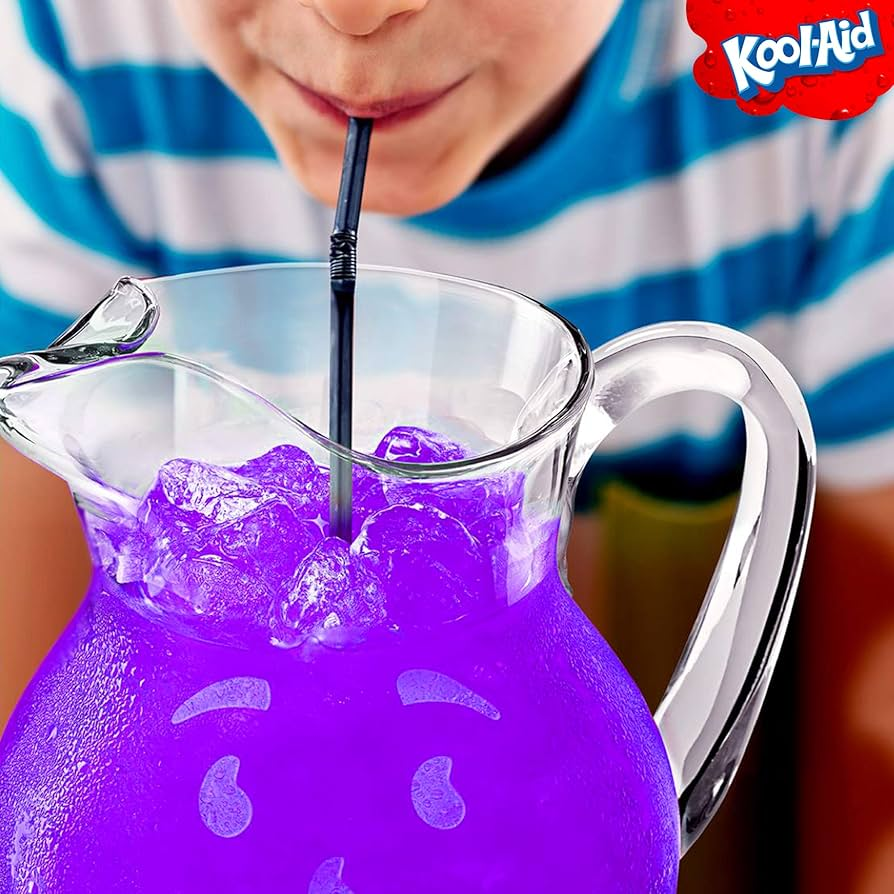

Home
Jim Jones' Kool-Aid

Description
Have you ever wanted to feel like a true cult leader without being an actual cult leader? This Jim Jones inspired
kool-aid recipe will sure make you feel like it. Without, of course, the killing yourself & your followers with cyanide-laced
Kool-Aid part. This is very much just a normal Kool-Aid recipe, but is nontheless delicious and very refreshing!
Ingredients
- 1 .14 oz Grape Kool-Aid Unsweetened Drink Mix
- 1 .14 oz Lemonade Kool-Aid Unsweetened Drink Mix
- 2 cups Granulated Sugar
Steps
- Pour the lemonade and grape drink mixes into a large pitcher. Add the sugar.
- Only add enough cold water (and ice, if desired) to the pitcher to make 4 quarts (or 1 gallon).
- Stir the mixture until the sugar and drink mixes are dissolved.
- Drink cold and enjoy!